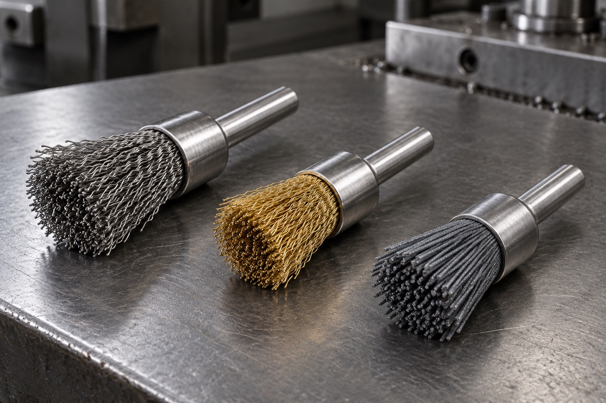

Crimped-wire end-brush direction
Review for localized cleaning and surface preparation where a more conformable wire face is appropriate. Confirm wire material, contact pressure and protected surfaces against the workpiece.
Home / Product families / Shank-mounted end brushes
SHANK-MOUNTED END BRUSHES
End brushes place the working face at the end of a mounted shank for localized cleaning, deburring or finish preparation. Start with the target area, workpiece sensitivity, spindle interface and result required.
Discuss an end-brush applicationNeed to reach inside a bore, pipe or tube? See pipe and tube brushes →

Review for localized cleaning and surface preparation where a more conformable wire face is appropriate. Confirm wire material, contact pressure and protected surfaces against the workpiece.
For a more concentrated contact pattern, discuss the target material, removal task and spindle conditions. Final construction and safe operating limits are confirmed for the selected design.
For selected non-metallic abrasive finishing or deburring needs, define the substrate, finish target and downstream operation before reviewing abrasive fill and brush geometry.
APPLICATION-LED SELECTION
End-brush performance depends on brush geometry, fill and the actual machine setup. Share the drawing or a photo of the target feature; confirm fit and result on representative parts before repeat production.
| Workpiece | Material, coating, contaminant or burr; areas that must be protected |
|---|---|
| Target area | Edge, corner, weld, recess or small feature; contact direction and access |
| Machine interface | Spindle or tool type, shank interface and operating conditions |
| Brush construction | Wire or abrasive filament direction, head profile, trim and reach |
| Acceptance | Finish reference, sample objective and inspection method |
COMMON QUESTIONS
An end brush has its working face at the end of a mounted shank and is used for localized contact. A tube or pipe brush is designed to contact an internal wall along a bore or passage; its reach and head geometry are specified separately.
Share the target feature, workpiece material, current surface condition, spindle or tool interface, desired finish and any drawing or photo. The final brush type and operating limits require application review.
Yes. Describe the removal task, substrate, surface sensitivity and next process. Material compatibility and the proposed brush construction should be confirmed before production.
Ferrabrio can review an end-brush direction against your drawing, photo or sample and confirm the configuration before quotation.